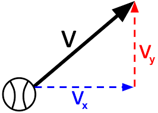
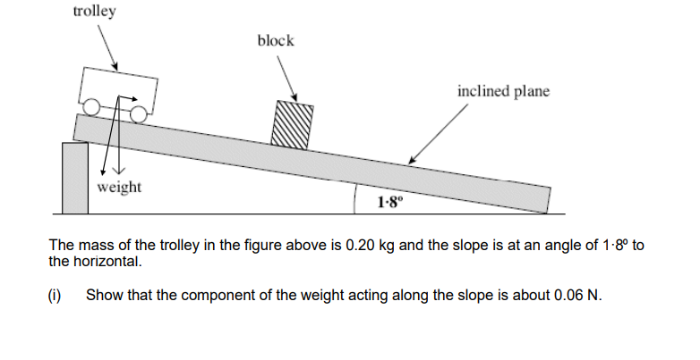
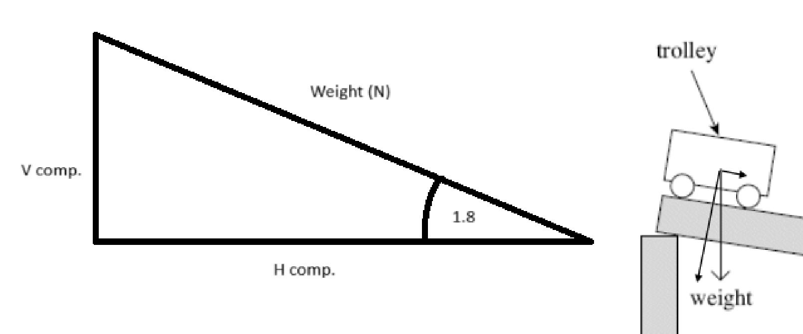
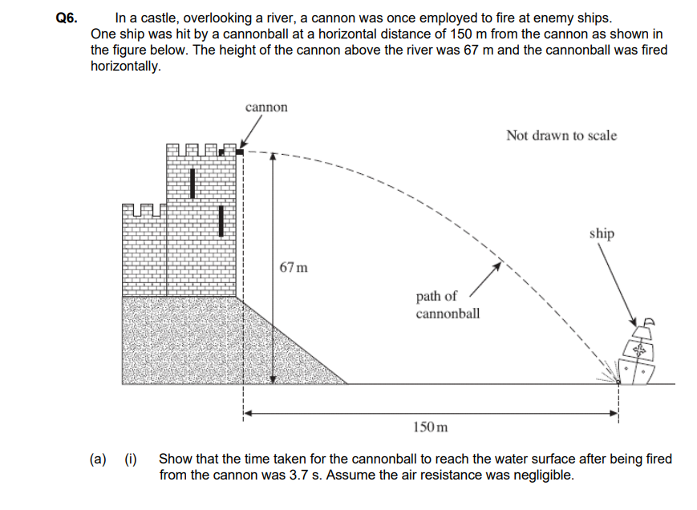
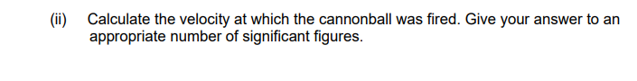

Motion
Motion is the change in position of an object over time. It can be described in terms of displacement, distance, speed, velocity, and acceleration. Understanding motion is fundamental to the study of physics as it helps explain how objects interact with forces and energy.
Key Concepts in Motion
- Displacement: A vector quantity that refers to the change in position of an object. It has both magnitude and direction.
- Distance: A scalar quantity that refers to how much ground an object has covered during its motion.
- Speed: A scalar quantity that refers to how fast an object is moving. It is calculated as distance divided by time.
- Velocity: A vector quantity that refers to the rate at which an object changes its position. It is calculated as displacement divided by time (\(v = \Delta s / \Delta t\)).
- Acceleration: A vector quantity that refers to the rate at which an object's velocity changes over time. It is calculated as change in velocity divided by time (\(a = \Delta v / \Delta t\)).
| Scalars (magnitude only) | Vectors (magnitude and direction) |
|---|---|
| distance, speed, time, mass | displacement, velocity, acceleration |
| energy, work, power, density | force, weight, momentum |
| temperature, charge, volume | electric field strength, gravitational field strength |
Vectors are shown in print with bold letters (F) or with an arrow over them (\(\vec{F}\)). In a calculation you pick a positive direction first, then anything pointing the other way gets a minus sign. Most SUVAT mistakes come from forgetting this.
Interpreting displacement-time, velocity-time and acceleration-time graphs
As you can see, when displacement is increasing at a constant rate, where displacement is directly proportional to time, the velocity is constant.
This shows that obtaining the velocity graph from a displacement graph is just differentiating the function used to graph displacement: the velocity at any instant is the gradient of the s - t graph at that instant.
Just in case it is not clear yet, let's suppose this is the equation for displacement:
Thus:
\[ v = 10 \ \text{m s}^{-1} \]More s - t graph examples:
This example shows a parabolic s - t graph.
If we apply the same logic to this situation, we obtain a linear graph;
this makes sense as our gradient (which represents the velocity at that point) is increasing at a linear rate,
which also means our velocity is increasing linearly.
In this example, the gradient starts off steep, but slowly levels off to a gradient of 0.
Velocity time graphs
Velocity - time graphs have velocity on the y - axis and time on the x - axis. In this situation, the gradient
of the graph at a point represents the acceleration of the object.
The Area under the graph until a certain point represents the displacement of the object (this is the same as the distance moved as long as the object never turns around; area below the time axis counts as negative displacement).
Here is an example:
Acceleration time graphs
For an acceleration - time graph, the area under the graph from the start until a certain
time represents the change in velocity up to that time.
This means that when acceleration is negative, velocity is not necessarily negative, it is just decreasing.
Here is an example:
In this situation, the area under the positive part and negative part are equal.
Thus, if the object started from rest, the velocity at the end would be equal to 0 m/s, as the areas (which represent the change in velocity) cancel out.
Try it yourself: all three graphs at once
Pick a motion, or choose Drive it yourself and push the acceleration slider around while the car moves. The dots on the road are where the car was every second, like a ticker-tape or multiflash photo, so wider spacing means faster. When it stops (or you press pause), move your mouse over any graph: you will see the tangent on the s - t graph (its gradient is \(v\)) and the shaded area under the v - t and a - t graphs (giving \(s\) and \(\Delta v\)).
Gradients and areas: the whole topic in one table
| Graph | Gradient gives | Area under it gives |
|---|---|---|
| displacement–time | velocity | (nothing useful) |
| velocity–time | acceleration | displacement |
| acceleration–time | (rate of change of acceleration, not needed) | change in velocity |
For a curved graph, the instantaneous rate of change is the gradient of the tangent at that point. The average rate of change is the gradient of the straight line joining two points.
Equations of Motion
The equations of motion describe the relationship between displacement, velocity, acceleration, and time for uniformly accelerated motion. The four main equations are:
- v = final velocity (m/s)
- u = initial velocity (m/s)
- a = acceleration (m/s²)
- s = displacement (m)
- t = time (s)
Each equation leaves out one of the five letters. Write down the three you know and the one you want; the equation that doesn't contain the fifth one is the one to use.
Derivation of Equations of Motion
They can be derived from the definitions of velocity and acceleration, along with the assumption of constant acceleration. For example, the first equation (v = u + at) comes directly from the definition of acceleration as the change in velocity over time. The others come from the area under the velocity - time graph.
Acceleration is the rate of change of velocity. If it is constant, it is the change in velocity divided by the time taken:
\[ a = \frac{v-u}{t} \quad\Rightarrow\quad \boxed{v = u + at} \]This is also why the v–t graph is a straight line: the gradient is constant.
Displacement is the area under the v–t graph. The graph is a straight line from \(u\) up to \(v\), so the area is a trapezium of width \(t\):
\[ \boxed{s = \tfrac{1}{2}(u+v)\,t} \]Now split that trapezium into a rectangle (height \(u\)) and a triangle on top (height \(v-u\)):
\[ s = ut + \tfrac{1}{2}\,t\,(v-u) \]From step 1, \(v - u = at\). Substitute it in:
\[ s = ut + \tfrac{1}{2}\,t\,(at) \quad\Rightarrow\quad \boxed{s = ut + \tfrac{1}{2}at^2} \]To get an equation without \(t\), rearrange step 1 to \(t = \dfrac{v-u}{a}\) and put it into the trapezium equation:
\[ s = \tfrac{1}{2}(u+v)\cdot\frac{(v-u)}{a} = \frac{v^2-u^2}{2a} \]\((u+v)(v-u)\) is a difference of two squares: \(v^2 - u^2\).
Multiply both sides by \(2a\) and rearrange:
\[ \boxed{v^2 = u^2 + 2as} \]Further Insight
As you saw in the animation, these equations all assume that acceleration is constant. The point of showing the derivation of these equations is to give a deeper understanding and insight into this topic, as that is vital to being able to solve the questions given in the exams. Physics is not about memorizing, but about understanding.
Another, more mathematical, way to derive these equations is to use integration:
Deriving SUVAT with calculus
You will never be asked to integrate in an Edexcel physics paper, but this is the cleanest way to see where the equations come from.
Start from the definitions. Velocity is the rate of change of displacement and acceleration is the rate of change of velocity:
\[ v = \frac{ds}{dt}, \qquad a = \frac{dv}{dt} = \text{constant} \]Integrate the acceleration with respect to \(t\). Remember to treat every other letter except \(t\) as a constant:
\[ v = \int a \, dt = at + C \]At \(t = 0\) the velocity is \(u\), so the constant \(C = u\):
\[ v = u + at \]Now integrate the velocity, using the power rule on each term:
\[ s = \int (u + at)\, dt = \frac{ut^{0+1}}{0+1} + \frac{at^{1+1}}{1+1} + C' = ut + \tfrac{1}{2}at^2 + C' \]Displacement is measured from the starting point, so \(s = 0\) when \(t = 0\), giving \(C' = 0\):
\[ s = ut + \tfrac{1}{2}at^2 \]It's tempting to write \(\int v\,dt = vt\), but that only works if \(v\) is constant. Here \(v\) changes with time, so we must integrate the expression \(u + at\) instead.
Now we can work out the other SUVAT equations using the same substitution method shown in the animation.
SI Units
The last thing you need to know are the S.I. base units. These are base units which are what every other form of measurement are compared to. They serve as the modern form of the metric system, used world wide. They are:
- Meter (\(m\)): for length
- Kilogram (\(kg\)): for mass
- Second (\(s\)): for time
- Ampere (\(A\)): for electric current
- Kelvin (\(K\)): for temperature
- Mole (\(mol\)): for amount of substance
- Candela (\(cd\)): for light intensity (you won't need this one for Edexcel)
Here are some examples of derived units:
- Newton (\(N\)): the unit of force, equivalent to \(kg\cdot m/s^{2}\)
- Joule (\(J\)): the unit of work or energy, equivalent to \(N\cdot m\)
- Pascal (\(Pa\)): the unit of pressure, equivalent to \(N/m^{2}\)
- Watt (\(W\)): the unit of power, equivalent to \(J/s\)
- Meters per second (\(m/s\)): the unit for velocity and speed
- Meters per second squared (\(m/s^{2}\)): the unit for acceleration
- Cubic meters (\(m^{3}\)): the unit for volume
- Square meters (\(m^{2}\)): the unit for area
To find the base units of anything, write it as an equation of things you already know. For example \(W = Fs\), so \(1\ \text{J} = 1\ \text{N} \times 1\ \text{m} = 1\ \text{kg m}^2\,\text{s}^{-2}\). An equation must be homogeneous: both sides have the same base units.
Vectors: resolving and adding
To understand projectile motion, you first need to understand the nature of vector quantities and how they can be broken up into vertical and horizontal components.

As a ball is moving at an angle, it is moving forward a certain velocity and upwards a certain velocity. We can calculate
these velocity components using our SohCahToa rules as \(V_{y}\) and \(V_{x}\) are perpendicular.
Thus, we can write \(V_{y}\) and \(V_{x}\) as:
where \(\theta\) is the angle the ball is thrown at, measured from the horizontal.
Adding two vectors
Draw them tip-to-tail; the resultant joins the start of the first to the end of the second. If the two vectors are at right angles you can calculate the resultant with Pythagoras and its direction with tan:
\[ R = \sqrt{A^2 + B^2}, \qquad \tan\theta = \frac{B}{A} \]For any other angle, the spec only expects you to find the resultant with a scale drawing (or by resolving each vector into components and adding those).
Now let's do a question (remember, this concept applies to all vector quantities, such as force, momentum etc.)

First, let us find the weight of the trolley...
we know that:
Thus
\[ W = 0.2 \cdot 9.81 = 1.962\ \text{N} \]Now let us use the formula from before (remember, we are trying to find the component of the weight along the slope, which is the vertical component in the diagram):

\[ V_{y} = V \cdot \sin(\theta), \qquad \theta = 1.8^{\circ} \] \[ V_{y} = 1.962 \cdot \sin(1.8^{\circ}) = 0.0616\ \text{N}\ (3\ \text{s.f.}) \approx 0.06\ \text{N} \]On a slope of angle \(\theta\), the component of the weight along the slope is \(mg\sin\theta\) and the component perpendicular to it is \(mg\cos\theta\). Check with an extreme case: when \(\theta = 0\) (flat ground) nothing pulls the trolley along, and \(\sin 0 = 0\).
Projectile motion
A projectile is anything moving freely under gravity alone. The big idea is that the horizontal and vertical motions are independent: gravity only acts vertically, so
- Horizontally: no force (ignoring air resistance), so \(a_x = 0\) and the horizontal velocity \(u\cos\theta\) never changes.
- Vertically: constant acceleration \(g = 9.81\ \text{m s}^{-2}\) downwards, so use SUVAT with \(u_y = u\sin\theta\).
- Time is the only thing the two directions share. Find it from one direction and use it in the other.
The range equation and why 45° goes furthest
Exam questions always make you work through SUVAT step by step, but for a projectile launched and landing at the same height there is a neat shortcut.
Vertically, the projectile lands back at the same height, so \(s_y = 0\). Taking up as positive, \(a = -g\):
\[ 0 = (u\sin\theta)\,t - \tfrac{1}{2}gt^2 \quad\Rightarrow\quad t = \frac{2u\sin\theta}{g} \]The other solution, \(t = 0\), is the moment of launch.
Horizontally there is no acceleration, so range = horizontal velocity × time:
\[ R = (u\cos\theta)\cdot\frac{2u\sin\theta}{g} = \frac{u^2 \cdot 2\sin\theta\cos\theta}{g} \]Use the identity \(2\sin\theta\cos\theta = \sin 2\theta\):
\[ R = \frac{u^2 \sin 2\theta}{g} \]\(\sin 2\theta\) is biggest (= 1) when \(2\theta = 90^\circ\), so the maximum range is at \(\theta = 45^\circ\). Angles that add up to 90° (like 30° and 60°) give the same range.
With air resistance the best angle drops below 45°, which is why the trajectory in the simulation becomes lopsided: steeper on the way down than on the way up.
Now let's look at a projectile motion question:

In this question, we are given the height the ball was thrown from, the distance between the cannon and the ship, and the initial vertical velocity (which is 0 as it is shot horizontally).
Out of the 2 distances given, the one we will use is the vertical one. We choose this one as acceleration due to gravity (9.81 m/s²)
acts downwards, which causes the ball to fall. Now, we can use the SUVAT equations we derived previously (to choose which
equation to use, compare the values you are given and what you have to find with the equations provided on the sheet, then choose accordingly).
Taking down as positive:
Rearrange:
\[ t^{2} = \frac{2 \cdot 67}{9.81} = 13.66 \quad\Rightarrow\quad t = 3.696\ \text{s} \approx 3.7\ \text{s} \]
For this question, we need to use the t value we calculated previously. As we know the distance to the ship and the time it takes to reach it, we can use the v = s/t equation to work out its initial horizontal velocity (which stays constant):
\[ V_{x} = \frac{S_{x}}{t} = \frac{150}{3.696} = 40.6\ \text{m s}^{-1}\ (3\ \text{s.f.}) \]Now, we can use the value of t and the acceleration equation to find out the vertical component of velocity just before the ball hits the ship (which is at t = 3.696 s):
\[ a_{y} = \frac{v_{y} - u_{y}}{t} \quad\Rightarrow\quad v_{y} = a_{y}\cdot t + u_{y} \] \[ v_{y} = 9.81 \cdot 3.696 + 0 = 36.3\ \text{m s}^{-1}\ (3\ \text{s.f.}) \]
To do this question, we use our answers from parts (ii) and (iii) and apply our knowledge of vector components.
First we need to find the magnitude of the velocity, which is simple as we use Pythagoras' theorem. As the question explicitly states just before it hits the ship, our \(v_{y}\) and \(v_{x}\) are 36.3 and 40.6:
Now, we need to find the direction, which is the angle at which it is travelling during that time. To calculate this, we will use SohCahToa:
\[ \tan(\theta) = \frac{OPP}{ADJ} = \frac{v_{y}}{v_{x}} = \frac{36.3}{40.6} \] \[ \theta = \arctan\left(\frac{36.3}{40.6}\right) = 41.8^{\circ}\ \text{below the horizontal} \]As you can see, projectile motion is nothing more than applying your knowledge of SUVAT equations and vectors, there is nothing new.
Core Practical 1: measuring g
Determine the acceleration of a freely-falling object
A steel ball is held by an electromagnet and released; a timer starts when the current is switched off and stops when the ball breaks a light gate (or opens a trapdoor) a height \(h\) below. Repeat for several heights.
Because the ball starts from rest, \(h = \tfrac{1}{2}gt^2\). This has the form \(y = mx\), so plotting \(h\) against \(t^2\) gives a straight line through the origin with gradient \(= g/2\).
- Measure \(h\) from the bottom of the ball to the light gate, and use a set square to avoid parallax.
- Repeat each height and average to reduce the effect of random error.
- A delay in the magnet releasing the ball is a systematic error: every time is too long, so the line no longer goes through the origin. Using the gradient (not a single reading) removes its effect on \(g\).
Quick checks
A ball is thrown vertically upwards. At the very top of its flight, which statement is correct?
Gravity never switches off, so the acceleration is \(g\) downwards for the whole flight. At the top the velocity is changing from positive (up) to negative (down), so it passes through zero.
What does the area under an acceleration–time graph represent?
Area = \(a \times t = \Delta v\). It only equals the final velocity if the object started from rest.
One ball is dropped from a cliff at the same moment another is fired horizontally at 20 m s⁻¹ from the same height. Ignoring air resistance, which lands first?
Both have \(u_y = 0\) and \(a_y = g\), so the vertical motion is identical. The horizontal velocity of the fired ball has no effect on how fast it falls.
A force of 10 N acts at 30° above the horizontal. What is its horizontal component?
The horizontal component is adjacent to the angle: \(10\cos 30^\circ = 8.66\ \text{N}\). A component can never be larger than the vector itself.